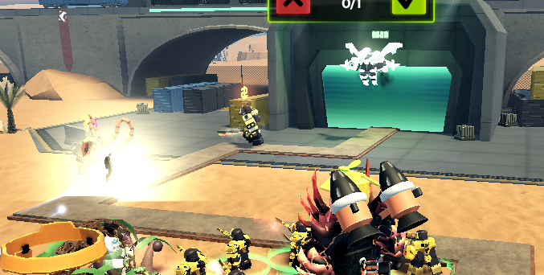
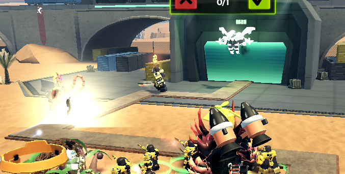

TDX Expert Rundown And Tips
TDX is a tower defense game on roblox, and I already know that you might be turn off at the word "Roblox", but TDX is very good for it being on Roblox. The only things bad about TDX are mostly anything that's dated; like, sadly the first two modes of the game. They are planned to be reworked in the coming months, but it will be a bit until they start. Now expert is currently the hardest normla mode; however very soon or even right as you read this, nightmare mode will take this spot and expert will be the second hardest normal mode. People do still tend to stuggle on this mode still, so I will hand down my knowledge of this mode so everyone can beat it :D.
I'll keep this from being a full walkthough of the mode as it's best to make your own strat to beat it then taking one, as at the end of the day TDX is a strategy game. I will still highly recommend to bring Railgunner, Juggernut, and Medic; as all three of them carry through the mode mid and late game. Now for the early game itself is pretty rough, not only flying enemies will show up at wave 11 and highly bullet resisted enemies showing up at wave 8, but the Xsoldier will make his first appearance at wave 6. Xsoldier doesn't have high health or a high resist to a damge type, no instead he has a gun that he will use to start killing your towers. He doesn't do a lot
okepofkoewkfpoewkfpoewkfpokewofkwpoefkpoewf kkfjewkfnwejfnkewnwefiewoijoij
kweofiewjoifjewoifjewiofjwoeifjowiefjiew
kkfjewkfnwejfnkewnwefiewoijoij
kweofiewjoifjewoifjewiofjwoeifjowiefjiew
 idjqoidjioewjfoiwjeoifjewoifjewoifjoewif
ofkeapofkeokfpowekfpoekpokepof
idjqoidjioewjfoiwjeoifjewoifjewoifjoewif
ofkeapofkeokfpowekfpoekpokepof